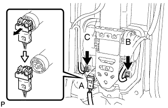
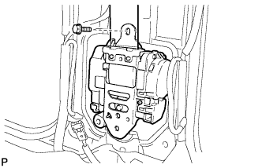

FRONT SEAT OUTER BELT ASSEMBLY > REMOVAL |
| 1. DISCONNECT CABLE FROM NEGATIVE BATTERY TERMINAL |
| 2. REMOVE FRONT DOOR SCUFF PLATE |
 |
Detach the 7 claws and 4 clips, and remove the scuff plate.
| 3. REMOVE REAR STEP COVER |
 |
Detach the 2 claws and remove the step cover.
| 4. REMOVE REAR DOOR SCUFF PLATE |
 |
Remove the screw.
Detach the 3 claws and 4 clips, and remove the scuff plate.
| 5. REMOVE CENTER PILLAR GARNISH COVER |
 |
Detach the 2 clips and 2 guides, and remove the cover.
| 6. REMOVE CENTER LOWER PILLAR GARNISH |
 |
Remove the bolt and seat belt's anchor.
 |
Detach the 2 claws and 7 clips, and remove the center lower pillar garnish.
| 7. REMOVE REAR ASSIST GRIP ASSEMBLY |
 |
Detach the 4 claws and remove the 2 assist grip plugs.
 |
Remove the 2 bolts.
Detach the 2 claws and remove the rear assist grip.
| 8. REMOVE CENTER PILLAR GARNISH |
 |
Remove the bolt.
Detach the 2 clips and 2 guides.
Pass the seat belt anchor through the center pillar garnish, and remove the center pillar garnish.
| 9. REMOVE FRONT SEAT OUTER BELT ASSEMBLY |
 |
Remove the nut and shoulder anchor.
 |
Disconnect the pretensioner connector labeled A as shown in the illustration.
Disconnect the tension reducer connector labeled B.
w/ Pre-Crash Safety System:
Disconnect the pre-crash safety connector labeled C.
 |
Remove the bolt and seat belt.
| 10. REMOVE FRONT SHOULDER BELT ANCHOR ADJUSTER ASSEMBLY |
 |
Remove the 2 bolts and adjuster.